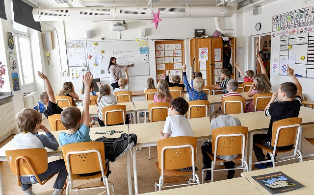

Welcome
At Arden primary do our utmost to make sure the children enjoy their education and that they are extremely safe while learning here at Arden. Not only that but we think that every single individual child is special and if needed, we provide more support to those that may need just a little bit more help.
Throughout the whole of the school amongst staff and the children we do not tolerate any bullying or violence. This is to maintain a safe learning environment for all the kids.
We pride ourselves on kind being to one another be it staff or children to make sure that while the children are at the school they're around a happy working environment. We feel this helps a lot with not only the safety of the children but also that it helps promote a better environment while learning here at Arden Primary.
